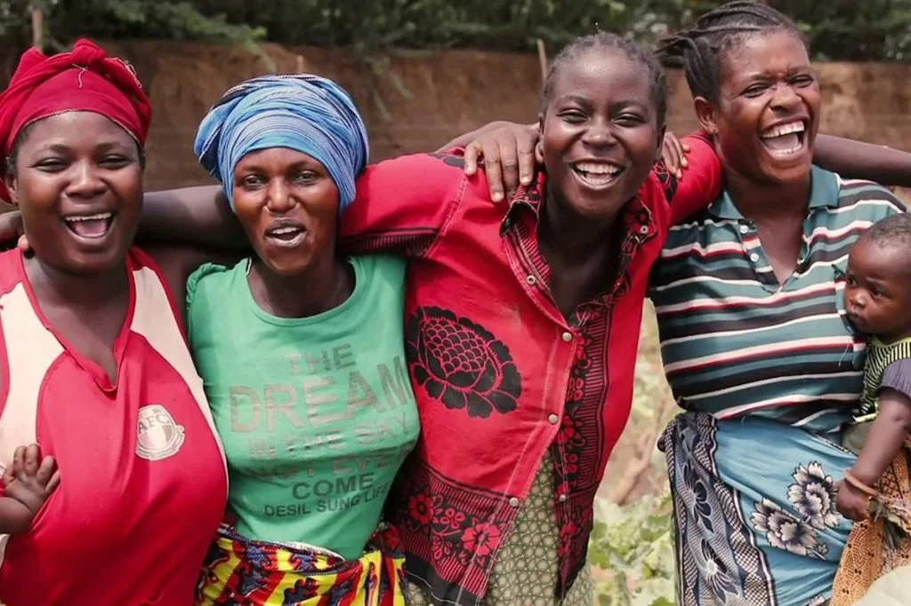

An evening at Ndere Centre is one of the most enjoyable ways to understand Uganda through feeling rather than explanation. Music begins,
dancers enter, and within minutes the stage is carrying rhythms, costumes, and stories from different regions with a confidence that
makes the whole experience feel celebratory rather than educational in a dry sense.
What makes Ndere so effective is that it brings together skill and warmth. The performances are polished, but they never feel distant.
There is humor, audience energy, live sound, and a sense of welcome that helps first-time visitors relax into the experience quickly.
For travelers whose Uganda plans have focused heavily on landscapes and wildlife, Ndere adds a valuable shift. It reminds you that
culture is not a side note to the journey. It is part of the country's pulse.
Dance And Music Do More Than Entertain
The performances reveal range. Uganda's cultural life is not a single style but a mosaic of languages, regions, instruments, and
movement traditions. Watching those forms unfold in one evening gives visitors a more textured understanding of the country's diversity.
Because the show is so alive, the learning happens almost indirectly. You absorb rhythm first, then notice the storytelling, then start
connecting costume, gesture, and sound to particular places and traditions. It is one of the most pleasant forms of cultural learning a
traveler can ask for.
The Atmosphere Matters As Much As The Stage
Ndere works not only because of what happens under the lights, but because of the mood around the performance. There is anticipation
before the show, conversation during interludes, and an easy communal feeling that turns the evening into more than a passive sit-down event.
This matters for visitors. Instead of observing culture at arm's length, they feel invited into a shared environment where enjoyment
and appreciation happen together.
Why It Belongs In A Kampala Stay
Kampala can be energetic and fast-paced, and Ndere offers a different kind of night out. It gives structure, artistry, and a clear
cultural lens without losing the pleasure of an evening well spent. It is especially useful for travelers who want a richer impression
of Uganda than markets, traffic, and city landmarks alone can provide.
Paired with food, conversation, and time elsewhere in the city, the performance helps Kampala feel more rounded and more memorable.
What Visitors Take Away
People leave Ndere talking about energy. The music lingers, the choreography stays in the mind, and the evening often becomes one of
the most unexpectedly joyful parts of a trip. It creates memory through participation of the senses, not only through information.
For anyone wanting to feel Uganda as well as see it, Ndere Centre is an excellent place to begin. It is lively, generous, and full
of the kind of cultural confidence that makes travel feel more human.